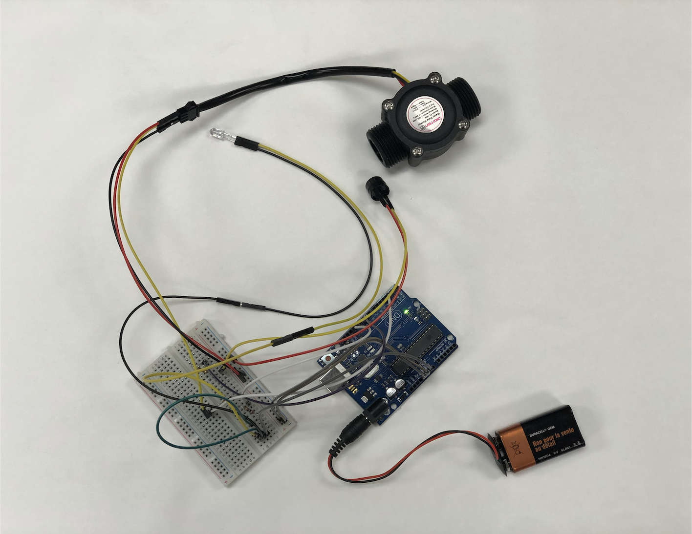
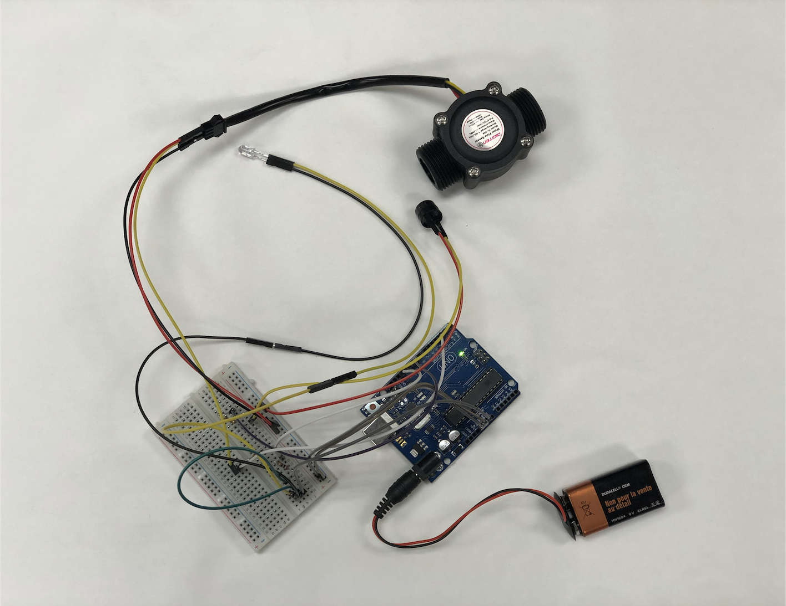

Intuitive armband device that enhances bicyclist safety with hands-free turn signals. Triggers a left turn signal when elbow moves away from the body and a right turn signal when elbow moves toward the body, stopping signaling when elbow is at rest.
 
